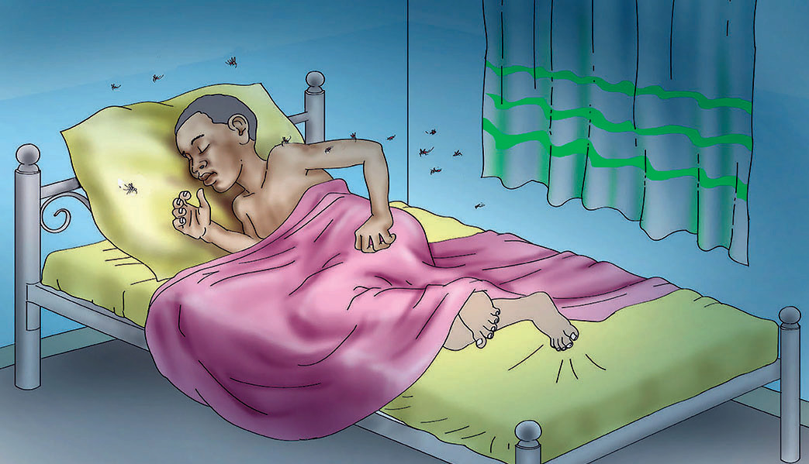

Sura ya Kumi
Kusoma kwa ufahamu
Utangulizi
Katika sura hii, utajifunza kusoma kwa ufahamu. Pia, utajifunza stadi ya kubashiri matukio katika mazingira tofauti. Vilevile, utajifunza kusoma kwa kuzingatia alama za uandishi.
Kubashiri matukio
Jibu maswali haya
- 1. Mvua ikinyesha kupita kiasi, kutatokea nini?
- 2. Usipopiga mswaki, kutatokea nini?
- 3. Upepo mkali ukivuma, kutatokea nini?
Tazama picha zifuatazo, kisha bashiri kinachoweza kutokea.
